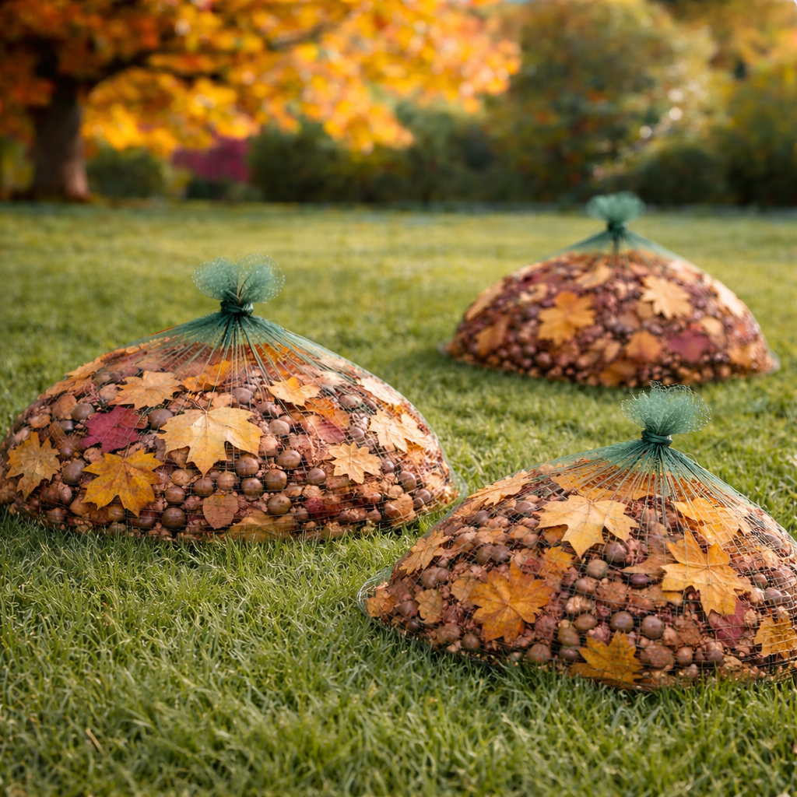
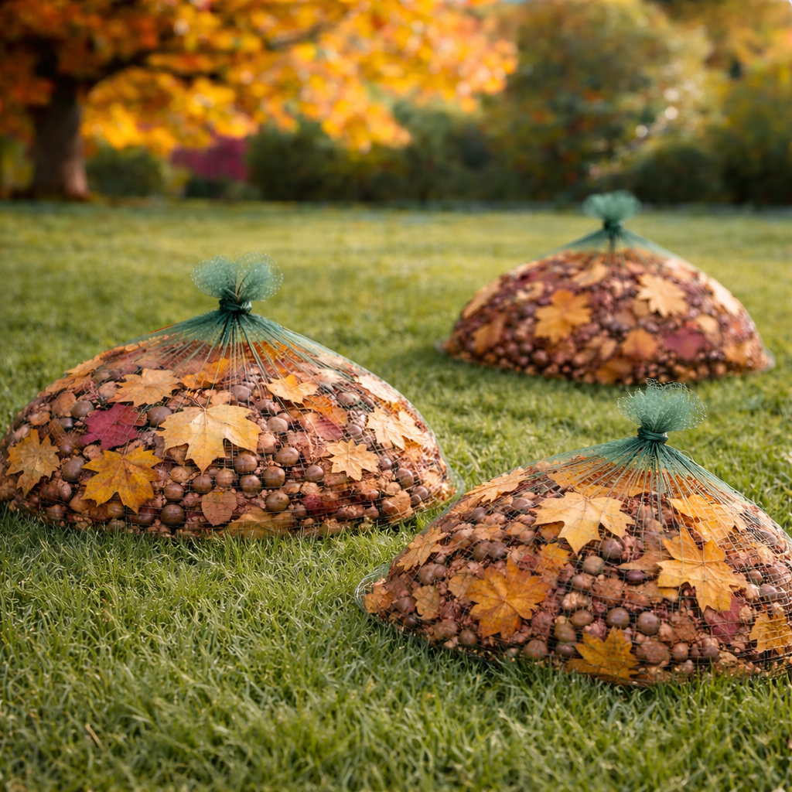

A repeat-use platform built on simplicity,
habit, and local scale.
Netleafa is designed around one fundamental shift.
Instead of chasing debris after it falls, capture it as it lands.
That shift unlocks more than convenience.
It creates a repeat-use system, predictable demand, and a
foundation for an entirely new category of ground management.
A product that becomes a habit.
Netleafa is sticky by design.
Once users experience passive ground capture, they do not return to traditional cleanup methods. The benefit is immediate and obvious. Less labor. Less mess. Less time spent managing a system that manifests predictably every season.
At the same time, Netleafa is not meant to be permanent.
The net cannot be left down indefinitely. Over time it will restrict growth and naturally begin to break down.
Netleafa is designed to be applied, used, removed, and reapplied.
That cycle matters.
It creates a tool people plan around season after season. A product that becomes part of routine maintenance rather than a one-time purchase. This repeat-use behavior drives long-term value without subscriptions or forced lock-in.
More than debris removal.
Debris capture is the entry point, not the ceiling.
The same netting system can be adapted to carry additional functions without changing how users interact with it.
Alternate applications include:
- Seed-loaded netting for lawn seeding and repair
- Fertilizer-integrated netting for controlled nutrient delivery
- Ground suppression netting for lawn removal or transition
- Salt-loaded netting for winter ice control on sidewalks, paths, and managed surfaces
Each application follows the same behavior:
Lay it down. Let it work. Remove it.
One system. Multiple seasons. No retraining required.
From product to service ecosystem.
Netleafa also enables a service model that does not exist today.
A single team can manage multiple stages of ground care using the same core system:
- Spring seeding and fertilization
- Seasonal maintenance
- Fall debris capture
- Winter ice management
This allows for full-cycle ground management without changing tools, vendors, or workflows.
For property owners, this simplifies coordination. For operators, it increases efficiency. For the business, it expands revenue without expanding complexity.
Designed for local manufacturing.
While Netleafa could be mass produced overseas at a lower unit cost, the system is intentionally suited for regional production.
Hemp grows quickly and regenerates efficiently.
Its fibers are durable, biodegradable, and visually appropriate for outdoor use.
Netting production and finishing can be handled by small and mid-sized facilities.
This supports a distributed manufacturing model:
- Shorter supply chains
- Reduced shipping costs
- Faster response to regional demand
- Stronger alignment with local economies
The opportunity exists to build a network of US-based, family-owned manufacturing and service partners operating under a shared system.
A modern, standardized version of a mom-and-pop infrastructure.
Not a novelty. Not a luxury.
Netleafa is not positioned as a designer lawn product or premium accessory.
It is meant to be:
- Simple
- Accessible
- Inexpensive
- Reliable
The goal is not to win on price alone, but to become the option people do not reconsider.
A few dollars cheaper is not enough to switch away from something that works quietly and consistently.
That loyalty is driven by habit, not branding.
A practical environmental outcome.
Netleafa does not ask users to change beliefs or behavior.
It removes friction.
Less fuel is used because machines are unnecessary.
Less plastic is consumed because bags are no longer required.
Less labor is wasted because the system works passively.
Environmental benefit is a byproduct of better design, not idealism.
The opportunity.
Netleafa is not a single product launch.
It is the foundation of a new category focused on passive ground management across residential, commercial, and municipal environments.
What starts with planting the seed of catching what falls expands into how the ground is seeded, maintained, protected, and managed year-round.
This is not lawn care. It is ground infrastructure.
Back to top

 
